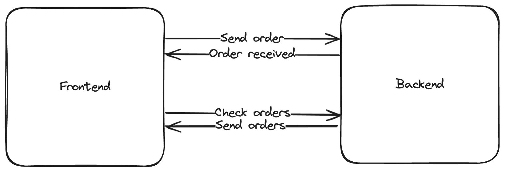
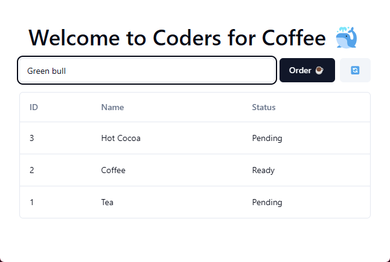
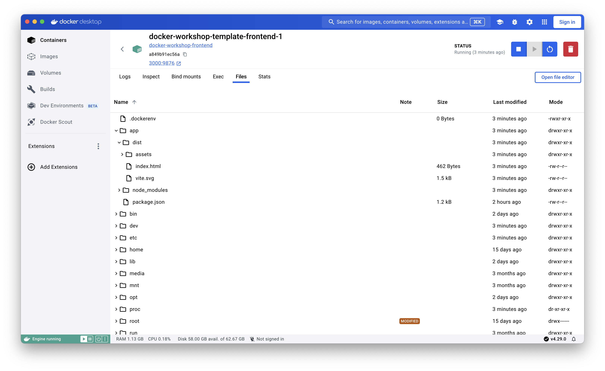

Introduction to Docker
Prerequisites¶
You need the following installed:
The starting repo for this workshop: https://github.com/codersforcauses/docker-workshop
What you will be building as part of this workshop?¶
CFC wants to make an app for accepting coffee orders. You will be creating a Dockerfile for CFC's (totally real) new and upcoming rebrand: Coders for Coffee 🐳. The architecture is a simple frontend and backend both made in TypeScript. Below is a diagram of it:

Important information¶
This workshop relies on a certain understanding of terminal commands and a bit of familiarity with Node.js projects. If you're not familiar with these, don't worry! I'll be explaining everything as we go along. If you have any questions, feel free to ask.
What is Docker?¶
Docker is a platform for developing, shipping, and running applications using containerization. It allows you to package an application and its dependencies into a container that can run on any machine. This makes it easy to deploy applications in a consistent and reproducible way. Simply put, it's like a way of running mini virtual machines inside your computer.
Why use Docker?¶
- Consistency: Docker containers are isolated from the host system and other containers, ensuring that the application runs the same way everywhere.
- Portability: Containers can be run on any machine that has Docker installed, making it easy to move applications between environments.
- Efficiency: Containers are lightweight and share the host system's resources, making them more efficient than virtual machines.
- Scalability: Docker makes it easy to scale applications by running multiple containers on the same host or across multiple hosts.
- Security: Containers are isolated from each other and the host system, providing an additional layer of security.
- DevOps: Docker is a key tool in the DevOps toolchain, enabling developers to build, test, and deploy applications more easily. Imagine a software job where instead of writing software for end-users, you write software to make developers' lives easier!
Definitions¶
- Dockerfile 📜: A text file that contains instructions for building a Docker image. It specifies the base image, dependencies, environment variables, and commands to run when the container starts. Think like a recipe for baking a cake.
- Image 📀: A read-only template with instructions for creating a Docker container. It contains the application code, runtime, libraries, environment variables, and configuration files. Think like a CD with music on it.
- Container ▶️: An instance of an image that can be run as a process on the host machine. It is isolated from other containers and the host system. Think like a CD in a CD player.
How do I use Docker?¶
This is a high-level overview of how Docker works:

In action, you'll only need to know a few commands to get started:
docker pull: Pull an image from a registry (like Docker Hub).docker run <image>: Run a container from an image.docker build: Build a Dockerfile into an image.
Getting started¶
Firstly, open your IDE and open the terminal.
- Clone the repository:
git clone https://github.com/codersforcauses/docker-workshop.git - Go to the directory:
cd docker-workshop - Run the setup script:
npm run setup - Run the app:
npm run dev. Visit http://localhost:3000 to see it in action.
What does the setup script do?
The setup script installs the dependencies for both the frontend and backend. It is located in the package.json in the root. Formatted nicely:
1 2 3 | |
What does the app do?¶
The frontend is a simple form that takes a user's order and sends it to the backend. The backend then saves the order to a "database". Below is a screenshot of the app:

Frontend¶
The frontend is a single page app that takes orders. It runs at http://localhost:3000.
Where is the frontend code?
The frontend code is located in the apps/frontend directory. The main file is src/App.tsx.
Backend¶
The backend is a simple Hono http server that listens for certain requests. It runs at http://localhost:3001. There are 3 important endpoints:
GET /- Show a simple page to check if the server is runningGET /orders- Get all ordersPOST /orders- Create an order
Where is the backend code?
The backend code is located in the apps/backend directory. The main file is src/index.ts.
You can view the first two by going to http://localhost:3001 and http://localhost:3001/orders in your browser.
What do we need to do?¶
We need to create a Dockerfile to build the frontend and backend to images, then run them as containers. I have already created a Dockerfile for the backend, which is located in the apps/backend directory. You will need to create a Dockerfile for the frontend.
Can I cheat?
Yes... If you choose to look at it, you might find it helpful. However, it comes with a few optimisations which may be confusing.
Building and running an image¶
Close the app dev server we ran earlier with CTRL+C.
Let's start by learning how to build and run a Docker image. First, let's build the backend:
1 | |
This command builds an image from the Dockerfile in the apps/backend directory and tags it (-t) with the name docker-workshop-backend. Otherwise, Docker will give it a random name.
Now, let's run the image we've built:
1 | |
Port Mapping
But wait, what does -p 3001:3001 do? I mentioned earlier that Docker basically runs mini virtual machines --- so let's visualise what that looks like.

In order for our container to make connect with the outside world, we need to create a little tunnel. This is done by mapping a port on the host machine to a port on the container. In our case, I've configured the backend to run internally on port 3001. Therefore, we need to map that internal port to a port on the host machine so we can access it. I kept it simple and mapped it to the same port, but you can change it to any port you like (given our frontend knows about it). Ports are mapped like this: -p <host-port>:<container-port> This also improves security, as you can run multiple containers on the same host machine without them interfering with each other.
Now, visit http://localhost:3001 to see the backend now running from a Docker container.
Manual build¶
To get a better idea of what we need to do, let's build the frontend manually.
Step 1: What are we building?¶
Imagine you are a robot that will execute commands to build the app to be production-ready. Regardless of what you're making, it'll usually fall into this pattern:
- Install dependencies
- Build the app (if needed)
- Serve or run the build files
Step 2: Mapping them to commands¶
The frontend is a React app that uses TypeScript, so we'll follow the template. If you're unsure, you can always Google what you need e.g. "How to install dependenceis React app":
- In your terminal, navigate to the frontend directory:
cd apps/frontend - Install dependencies:
npm install - Build the app:
npm run build - Serve the build files:
npm run start
The build and start scripts are located in apps/frontend/package.json.
1 2 3 4 5 6 7 8 | |
You can run these commands in the terminal yourself and open it up at http://localhost:9876/ to see the optimised production build of the frontend. Notice how the bottom text has changed from "development" to "production".
Creating a Dockerfile¶
When creating a Dockerfile, it's essentially the same process as manually doing it. The only difference is that you're automating it in a file. Start by creating a new file called Dockerfile in the apps/frontend directory.
Base image¶
All Dockerfiles start with a FROM command, which specifies the base image to use. This image is usually a lightweight Linux distribution with the necessary tools and libraries to run the application. For our frontend, we will use the node:20-alpine image. This specifies the (as of writing) LTS version of Node.js with the Alpine Linux distribution.
How do I know what image to use?
There are a number of things to consider when choosing a base image:
- Application: Because we're running a Node.js app, an image with Node.js already installed is a good choice.
- Size: Smaller images are faster to download and use less disk space.
- Security: Official images are more secure and are regularly updated. Most of the time you'll be using images from Docker Hub.
- Compatibility: Make sure the image is compatible with your application. In this case, the current LTS release for Node.js is 20, so we will use
node:20-alpine. Locking the version down is also good practice to prevent images from suddenly breaking.
1 2 | |
Working directory¶
We're in linux land now. First, let's create a directory to put our production files in. This is done with the WORKDIR command.
1 2 3 4 | |
Why do we need a working directory?
The WORKDIR command sets the working directory for any subsequent commands in the Dockerfile. This is where the application code will be copied to and where the application will run from. It's like changing directories in the terminal. Just like your own computer, you don't want to group important system files with your projects. It can be named anything you like, but the general convention is to name it /app.
Copying files¶
Next, we need to copy our source code into the image. This is done with the COPY command.
1 2 3 4 5 6 | |
What are we copying?
This command copies everything in the same directory where the Dockerfile is (.) from the host machine to the working directory in the container (./). This is the bare minimum we need to build the frontend. i.e. src, public, package.json, etc.
Installing dependencies and building¶
Now that we have our source code in the image, we need to install the dependencies. This is done with the RUN command. You can execute any supported command from the base image specified. Here, we run both npm install and npm run build in succession using &&.
1 2 3 4 5 6 7 | |
Why not do it on separate lines?
The reason we chain install && build is to reduce the number of layers in the image. Each RUN command creates a new layer in the image, which is essentially a snapshot of everything you've RUN up until now. More layers means a larger image size. By chaining commands together, we can reduce the number of layers and make the image smaller. Docker uses this to cache layers, so if you change a file, it will only rebuild the layers that depend on that file, saving time. In our case, our two commands both depend on the same files, so we should group them together.
Serving the build¶
We're almost there! The last thing we need to do is serve the build files. This is done with the CMD command. This command specifies the command to run when the container starts. In our case, we want to run npm run start.
1 2 3 4 5 6 7 8 9 | |
We're done --- not. There's one last thing we need to do: specify the port the server will run on. This is done with the EXPOSE command. Notice how earlier, npm run start actually started the server on port 9876, so let's expose that instead.
1 2 3 4 5 6 7 8 9 10 | |
Done¶
You can now build and run the frontend image. We can actually specify a specific port in the CMD, but I'm just going to map it to port 3000 on the host machine when running the container.
1 2 | |
If we open up Docker desktop, you can even inspect the container's filesystem to see what we've done.

The frontend is now running at http://localhost:3000!
Optimising the Dockerfile¶
Let's think about what we've done. We've copied the source code, installed dependencies, built the app, and served the build files. But there are a few things we can do to optimise the Dockerfile:
- Only have production dependencies in the image. Sometimes we developers install dev dependencies that aren't needed in production, but make our lives easier. If you take a look at
apps/frontend/package.json, you'll see a bunch of them. - Don't have the source code in the image. We only need the built files to run the app. This reduces the image size.
Prune the dependencies¶
This is the easiest one. For a node app, you can do npm prune --production to remove all dev dependencies.
1 2 3 4 5 6 7 8 9 10 11 | |
Multi-Stage builds¶
Now we want to remove the source code from the image. You might think you could build the app outside the image, but that would mean you'd need to have Node.js installed on your machine, which defeats the purpose of containerisation. Additionally, some dependencies are platform-specific, so the app might not even work when put inside the container. This is where multi-stage builds come in.
A multi-stage build is a feature of Docker that allows you to use multiple FROM commands in a single Dockerfile. Each FROM command starts a new stage in the build process. You can copy files from one stage to another, allowing you to build the app in one stage and copy the built files to another stage.
1 2 3 4 5 6 7 8 9 10 11 12 13 14 15 16 17 18 19 20 21 22 23 24 25 | |
Final touches¶
So now we know how to build a Dockerfile into an image and run it as a container. But there is one more thing we can do to make our lives easier: Docker Compose.
Docker Compose is a tool for defining and running multi-container Docker applications. It allows you to define the services, networks, and volumes for your application in a single file. This makes it easy to start, stop, and manage your application with a single command.
I've already created a docker-compose.yml file for you. It defines two services: frontend and backend. Instead of doing docker run ... in two terminals, you can now can run both services with a single command. You don't even have to build the images, as Docker Compose will do that for you!
1 | |
You also might find the frontend starting on port 9876 inside the container to be a little confusing. You can change the port mapping in the docker-compose.yml file to map it to port 3000 on the host machine. Don't forget to change the package.json script and the EXPOSE command in the Dockerfile as well.
Conclusion¶
This is just a small taste of what Docker can do. You could put your entire dev environment inside, push images to a registry and run them in the cloud, or even run a bunch of them in a Kubernetes cluster. Keep in mind that we only built a Dockerfile for a simple React app, so it'll be a different depending on what you do. Luckily, there are countless resources online to help you out --- just google "how to dockerise a